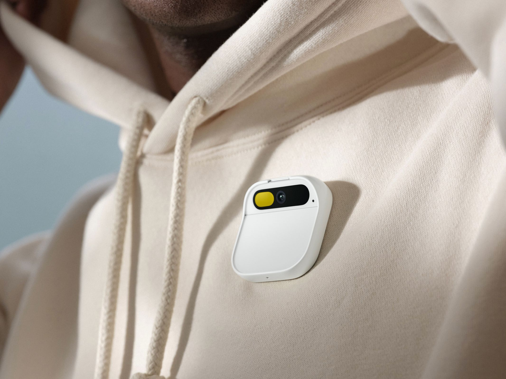

Humane AI Pin

Pequeño dispositivo vestible (wearable) que se fija en la ropa o la mano. Carece de pantalla principal y procesa las peticiones del usuario a través de modelos de lenguaje e Inteligencia Artificial, devolviendo la atención al entorno físico.

Ficha técnica del paradigma
- Entrada principal: Voz (lenguaje natural), gestos táctiles sencillos y cámara ambiental.
- Salida principal: Voz sintética, altavoz direccional y proyección láser efímera.
- Formato: Hardware ultra-compacto, discreto y ligero.
- Objetivo IPO: Reducir la carga cognitiva y el tiempo de pantalla.